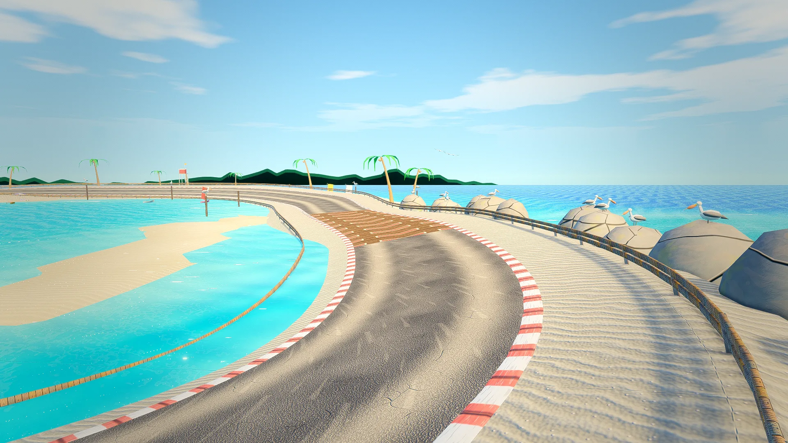

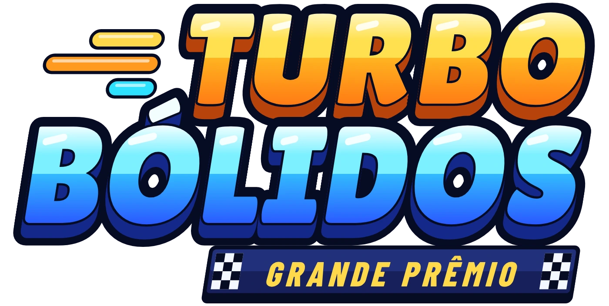
Monte seu bólido e acelere em pistas malucas, com itens, derrapagens, rampas e planador. Sem cadastro e sem internet: é só abrir e correr!
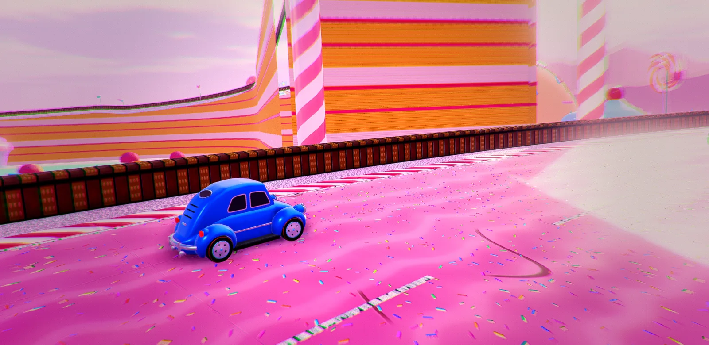
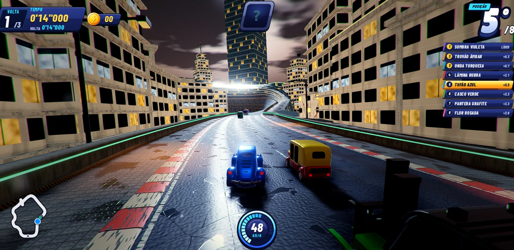
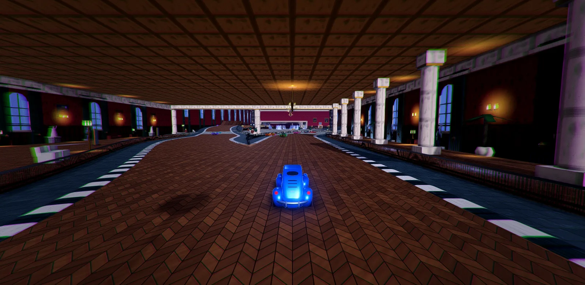
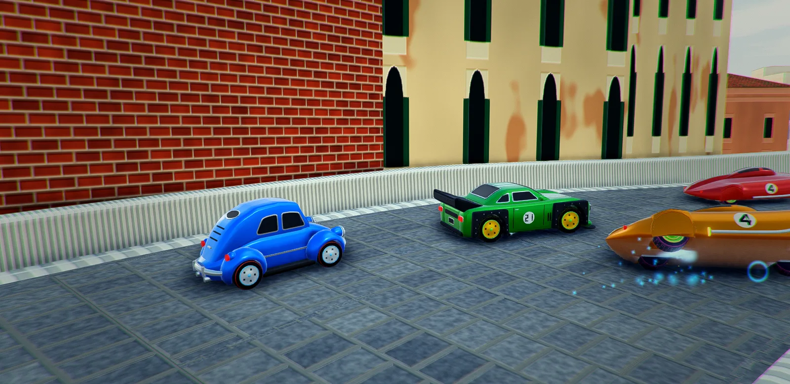
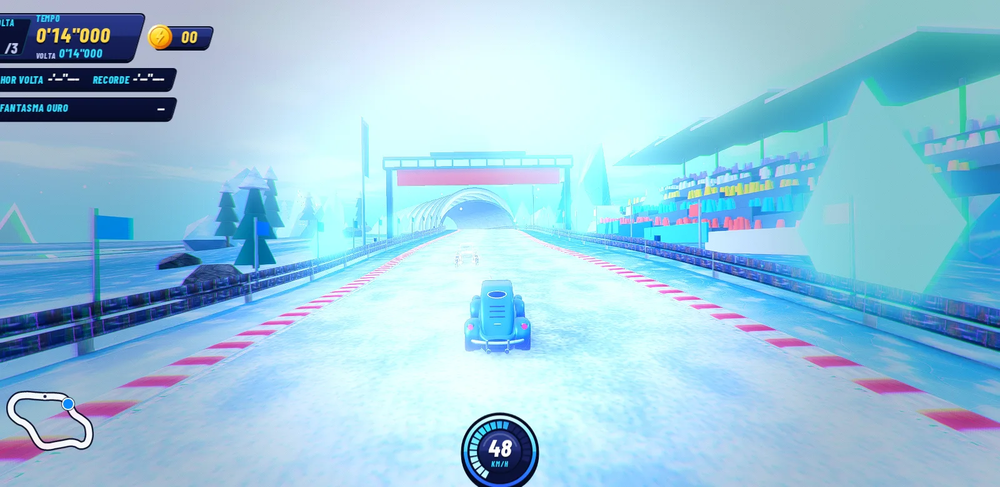
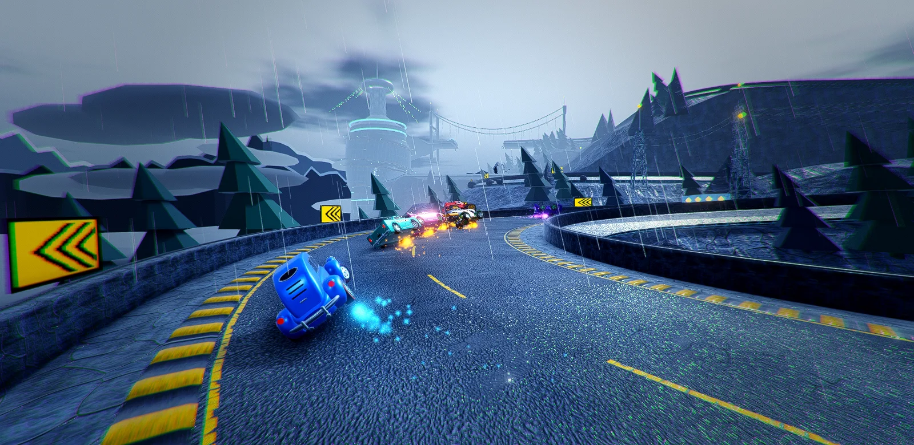
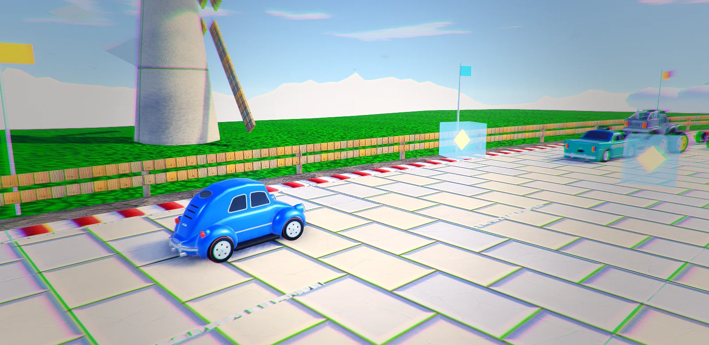
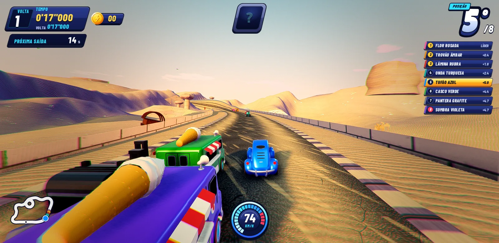
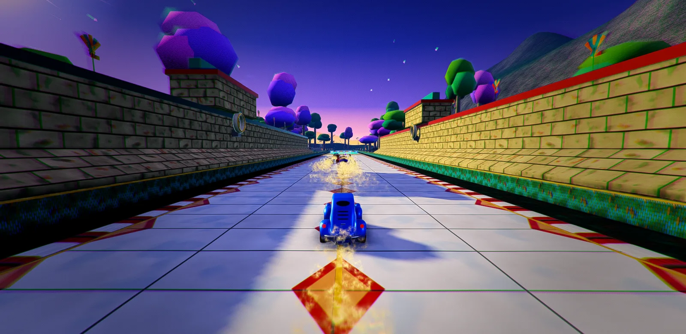
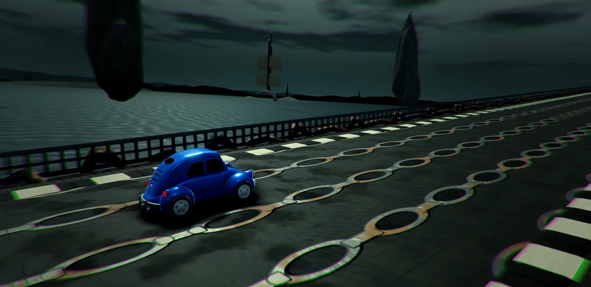
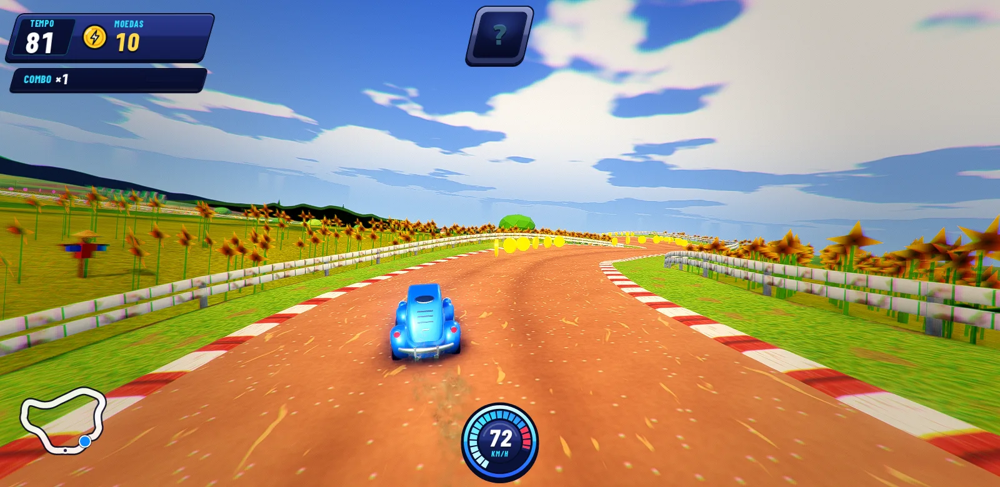
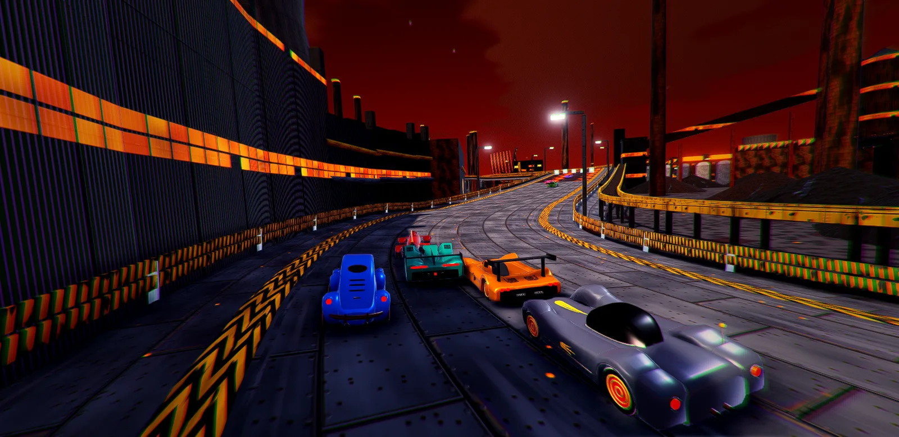
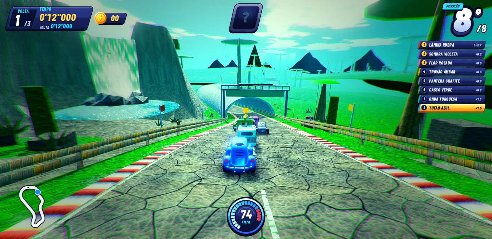
Escolha como acelerar
Copas valendo troféu, corridas rápidas, recordes contra o relógio e desafios que mudam o jeito de correr.
Grande Prêmio
Dispute as copas pista após pista. Os pontos de cada corrida se somam e o pódio final vale troféu.
Um mundo de circuitos
Praias, desertos, geleiras, cidades neon, cozinhas gigantes e mansões assombradas. Algumas pistas têm bifurcações de verdade: escolha seu caminho!
Do carro de rua à máquina de fantasia
Carrinhos retrô, peruas, tuc-tucs, calhambeques e máquinas que só existem aqui. Novos modelos são liberados conforme você avança.
Besourinho
Capô redondo, motor atrás, teimoso
Cada peça muda velocidade, aceleração, peso, tração e controle. Escolha também a pintura e os adesivos e descubra a montagem que combina com você.
Itens para virar o jogo
Passe pelas caixas da pista e torça pela sorte: cada item pode decidir a corrida na última volta.
Derrape, salte e voe
Mini-turbo na derrapagem
Segure o botão de derrapar na curva: quanto mais tempo, maior o turbo ao soltar.
- Azul
- Laranja
- Roxo
Rampas e planador
Salte das rampas e abra o planador para voar sobre os abismos e cortar caminho pelo alto.
Feito para o celular
Botões ou analógico, aceleração automática opcional e gráficos ajustáveis, do aparelho básico ao topo de linha.
Sempre um novo desafio
Cilindradas mais rápidas, modo espelhado, missões, conquistas, prêmio diário, eventos da semana e sala de troféus.
Sem cadastro, sem login e sem precisar de internet para jogar.
- Apelido, progresso e recordes ficam só no seu aparelho.
- Anúncios opcionais, em troca de moedas no jogo.